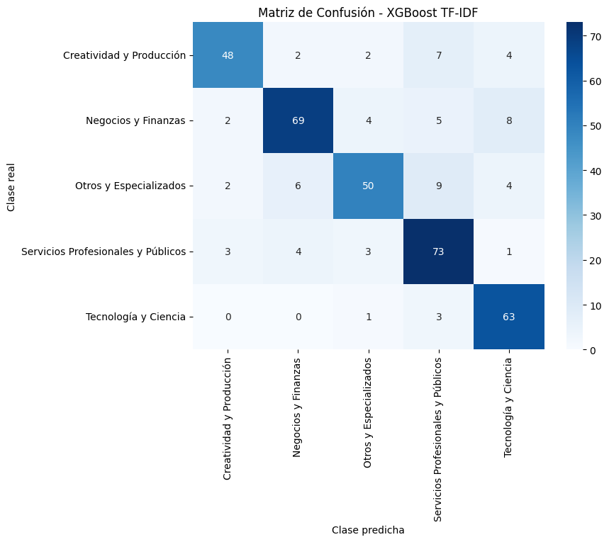
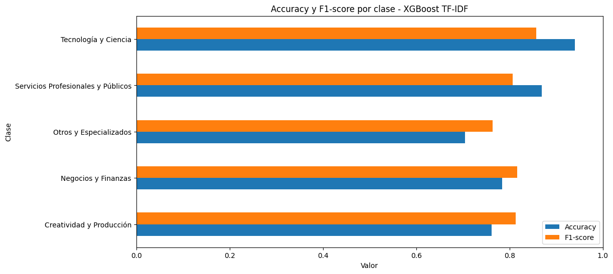

3. XGBoost con TF-IDF#
El método TF-IDF (Term Frequency–Inverse Document Frequency) convierte cada documento en un vector numérico que pondera la relevancia de cada palabra en función de su frecuencia en el documento y su rareza en el corpus completo. Esto permite capturar la importancia léxica sin depender de un contexto secuencial, priorizando términos distintivos que caracterizan cada categoría.
Posteriormente, el algoritmo XGBoost (Extreme Gradient Boosting) utiliza esos vectores para entrenar un modelo de clasificación.
Show code cell source
# MODULO DE MANEJO DE DATOS
# ---------------------------------
# [Carga de datos]
df = pd.read_json('../Data/clean_words.json', lines=True)
df = df.rename(columns={'macro_label': 'Category'})
print(f"Registros totales: {len(df)}")
# Codificar etiquetas
le = LabelEncoder()
df["label"] = le.fit_transform(df["Category"])
# Dividir dataset
train, temp = train_test_split(df, test_size=0.3, random_state=SEED, stratify=df["label"])
val, test = train_test_split(temp, test_size=0.5, random_state=SEED, stratify=temp["label"])
train, val, test = train.reset_index(drop=True), val.reset_index(drop=True), test.reset_index(drop=True)
print(f"Distribución de los datos: \nTrain: {len(train)} | Val: {len(val)} | Test: {len(test)}")
y_train, y_val, y_test = train['label'], val['label'], test['label']
num_classes = len(le.classes_)
print(f"Número de clases: {num_classes}")
Registros totales: 2483
Distribución de los datos:
Train: 1738 | Val: 372 | Test: 373
Número de clases: 5
🔹Modelo#
# MODULO DATASET
# -------------------------
tfidf = TfidfVectorizer(
max_features=20000,
ngram_range=(1, 2),
min_df=3,
sublinear_tf=True
)
X_train_tfidf = tfidf.fit_transform(train['clean_text'])
X_val_tfidf = tfidf.transform(val['clean_text'])
X_test_tfidf = tfidf.transform(test['clean_text'])
# MODULO MODELO
# -------------------------
# Configuración de hiperparámetros
params = {
"objective": "multi:softprob",
"num_class": num_classes,
"n_estimators": 100, # más árboles, pero cada uno aprende más lento
"max_depth": 4, # menos profundidad = menos sobreajuste
"learning_rate": 0.05, # pasos más pequeños
"subsample": 0.8, # usa el 80% de muestras por árbol (mejor generalización)
"colsample_bytree": 0.8, # usa el 80% de features
"reg_lambda": 1.0, # L2 regularización
"reg_alpha": 0.5, # L1 regularización (sparse)
"min_child_weight": 3, # evita que árboles crezcan con pocos ejemplos
"tree_method": "hist",
"eval_metric": "mlogloss",
"random_state": SEED,
}
base_dir = "results/XGBoost_TFIDF"
os.makedirs(base_dir, exist_ok=True)
xgb = XGBClassifier(**params)
# Entrenamiento del modelo
time_start = time.time()
xgb.fit(
X_train_tfidf, y_train,
eval_set=[(X_train_tfidf, y_train), (X_val_tfidf, y_val)],
verbose=True,
)
print("\n🔹Tiempo de entrenamiento: %.2f minutos" % ((time.time() - time_start) / 60))
# Guardar modelo y vectorizador
joblib.dump(xgb, os.path.join(base_dir, "xgb_model.joblib"))
joblib.dump(tfidf, os.path.join(base_dir, "tfidf_vectorizer.joblib"))
[0] validation_0-mlogloss:1.54583 validation_1-mlogloss:1.54882
[1] validation_0-mlogloss:1.49335 validation_1-mlogloss:1.49785
[2] validation_0-mlogloss:1.44849 validation_1-mlogloss:1.45643
[3] validation_0-mlogloss:1.40192 validation_1-mlogloss:1.41491
[4] validation_0-mlogloss:1.35592 validation_1-mlogloss:1.37248
[5] validation_0-mlogloss:1.31402 validation_1-mlogloss:1.33376
[6] validation_0-mlogloss:1.27608 validation_1-mlogloss:1.29847
[7] validation_0-mlogloss:1.24203 validation_1-mlogloss:1.26868
[8] validation_0-mlogloss:1.20783 validation_1-mlogloss:1.23787
[9] validation_0-mlogloss:1.17490 validation_1-mlogloss:1.20661
[10] validation_0-mlogloss:1.14373 validation_1-mlogloss:1.17822
[11] validation_0-mlogloss:1.11485 validation_1-mlogloss:1.15370
[12] validation_0-mlogloss:1.08600 validation_1-mlogloss:1.12733
[13] validation_0-mlogloss:1.06093 validation_1-mlogloss:1.10628
[14] validation_0-mlogloss:1.03687 validation_1-mlogloss:1.08587
[15] validation_0-mlogloss:1.01263 validation_1-mlogloss:1.06503
[16] validation_0-mlogloss:0.98797 validation_1-mlogloss:1.04345
[17] validation_0-mlogloss:0.96722 validation_1-mlogloss:1.02595
[18] validation_0-mlogloss:0.94371 validation_1-mlogloss:1.00723
[19] validation_0-mlogloss:0.92253 validation_1-mlogloss:0.98885
[20] validation_0-mlogloss:0.90233 validation_1-mlogloss:0.97081
[21] validation_0-mlogloss:0.88468 validation_1-mlogloss:0.95658
[22] validation_0-mlogloss:0.86700 validation_1-mlogloss:0.94018
[23] validation_0-mlogloss:0.85126 validation_1-mlogloss:0.92796
[24] validation_0-mlogloss:0.83656 validation_1-mlogloss:0.91469
[25] validation_0-mlogloss:0.82133 validation_1-mlogloss:0.90304
[26] validation_0-mlogloss:0.80566 validation_1-mlogloss:0.89054
[27] validation_0-mlogloss:0.79093 validation_1-mlogloss:0.87864
[28] validation_0-mlogloss:0.77732 validation_1-mlogloss:0.86799
[29] validation_0-mlogloss:0.76358 validation_1-mlogloss:0.85779
[30] validation_0-mlogloss:0.75028 validation_1-mlogloss:0.84852
[31] validation_0-mlogloss:0.73695 validation_1-mlogloss:0.83833
[32] validation_0-mlogloss:0.72447 validation_1-mlogloss:0.82878
[33] validation_0-mlogloss:0.71242 validation_1-mlogloss:0.81857
[34] validation_0-mlogloss:0.70064 validation_1-mlogloss:0.80772
[35] validation_0-mlogloss:0.68915 validation_1-mlogloss:0.79816
[36] validation_0-mlogloss:0.67805 validation_1-mlogloss:0.78953
[37] validation_0-mlogloss:0.66844 validation_1-mlogloss:0.78140
[38] validation_0-mlogloss:0.65910 validation_1-mlogloss:0.77295
[39] validation_0-mlogloss:0.64947 validation_1-mlogloss:0.76622
[40] validation_0-mlogloss:0.63973 validation_1-mlogloss:0.75968
[41] validation_0-mlogloss:0.63037 validation_1-mlogloss:0.75350
[42] validation_0-mlogloss:0.62138 validation_1-mlogloss:0.74631
[43] validation_0-mlogloss:0.61186 validation_1-mlogloss:0.73882
[44] validation_0-mlogloss:0.60274 validation_1-mlogloss:0.73100
[45] validation_0-mlogloss:0.59434 validation_1-mlogloss:0.72586
[46] validation_0-mlogloss:0.58598 validation_1-mlogloss:0.72039
[47] validation_0-mlogloss:0.57784 validation_1-mlogloss:0.71327
[48] validation_0-mlogloss:0.57014 validation_1-mlogloss:0.70809
[49] validation_0-mlogloss:0.56251 validation_1-mlogloss:0.70352
[50] validation_0-mlogloss:0.55498 validation_1-mlogloss:0.69844
[51] validation_0-mlogloss:0.54736 validation_1-mlogloss:0.69308
[52] validation_0-mlogloss:0.54035 validation_1-mlogloss:0.68777
[53] validation_0-mlogloss:0.53373 validation_1-mlogloss:0.68260
[54] validation_0-mlogloss:0.52690 validation_1-mlogloss:0.67813
[55] validation_0-mlogloss:0.52073 validation_1-mlogloss:0.67470
[56] validation_0-mlogloss:0.51464 validation_1-mlogloss:0.66981
[57] validation_0-mlogloss:0.50816 validation_1-mlogloss:0.66642
[58] validation_0-mlogloss:0.50198 validation_1-mlogloss:0.66238
[59] validation_0-mlogloss:0.49591 validation_1-mlogloss:0.65792
[60] validation_0-mlogloss:0.49028 validation_1-mlogloss:0.65385
[61] validation_0-mlogloss:0.48397 validation_1-mlogloss:0.65051
[62] validation_0-mlogloss:0.47833 validation_1-mlogloss:0.64618
[63] validation_0-mlogloss:0.47249 validation_1-mlogloss:0.64249
[64] validation_0-mlogloss:0.46697 validation_1-mlogloss:0.63862
[65] validation_0-mlogloss:0.46223 validation_1-mlogloss:0.63554
[66] validation_0-mlogloss:0.45716 validation_1-mlogloss:0.63212
[67] validation_0-mlogloss:0.45204 validation_1-mlogloss:0.62955
[68] validation_0-mlogloss:0.44701 validation_1-mlogloss:0.62686
[69] validation_0-mlogloss:0.44202 validation_1-mlogloss:0.62415
[70] validation_0-mlogloss:0.43738 validation_1-mlogloss:0.62248
[71] validation_0-mlogloss:0.43237 validation_1-mlogloss:0.62045
[72] validation_0-mlogloss:0.42746 validation_1-mlogloss:0.61787
[73] validation_0-mlogloss:0.42310 validation_1-mlogloss:0.61477
[74] validation_0-mlogloss:0.41897 validation_1-mlogloss:0.61202
[75] validation_0-mlogloss:0.41472 validation_1-mlogloss:0.60959
[76] validation_0-mlogloss:0.41069 validation_1-mlogloss:0.60647
[77] validation_0-mlogloss:0.40655 validation_1-mlogloss:0.60409
[78] validation_0-mlogloss:0.40289 validation_1-mlogloss:0.60177
[79] validation_0-mlogloss:0.39930 validation_1-mlogloss:0.60003
[80] validation_0-mlogloss:0.39592 validation_1-mlogloss:0.59782
[81] validation_0-mlogloss:0.39192 validation_1-mlogloss:0.59543
[82] validation_0-mlogloss:0.38779 validation_1-mlogloss:0.59383
[83] validation_0-mlogloss:0.38422 validation_1-mlogloss:0.59188
[84] validation_0-mlogloss:0.38016 validation_1-mlogloss:0.58953
[85] validation_0-mlogloss:0.37672 validation_1-mlogloss:0.58783
[86] validation_0-mlogloss:0.37310 validation_1-mlogloss:0.58575
[87] validation_0-mlogloss:0.36993 validation_1-mlogloss:0.58407
[88] validation_0-mlogloss:0.36634 validation_1-mlogloss:0.58204
[89] validation_0-mlogloss:0.36291 validation_1-mlogloss:0.58062
[90] validation_0-mlogloss:0.35919 validation_1-mlogloss:0.57966
[91] validation_0-mlogloss:0.35619 validation_1-mlogloss:0.57817
[92] validation_0-mlogloss:0.35270 validation_1-mlogloss:0.57698
[93] validation_0-mlogloss:0.34961 validation_1-mlogloss:0.57555
[94] validation_0-mlogloss:0.34644 validation_1-mlogloss:0.57518
[95] validation_0-mlogloss:0.34328 validation_1-mlogloss:0.57293
[96] validation_0-mlogloss:0.34019 validation_1-mlogloss:0.57213
[97] validation_0-mlogloss:0.33753 validation_1-mlogloss:0.57021
[98] validation_0-mlogloss:0.33397 validation_1-mlogloss:0.56912
[99] validation_0-mlogloss:0.33071 validation_1-mlogloss:0.56791
🔹Tiempo de entrenamiento: 4.41 minutos
['results/XGBoost_TFIDF\\tfidf_vectorizer.joblib']
El modelo XGBoost, se muestra la evolución de la función de pérdida (loss) en cada iteración. Tanto para el conjunto de entrenamiento y validación se reduce constantemente, evidenciando que el modelo aprende de manera progresiva y generaliza bien. No existe una divergencia o sobreajuste evidente.
🔹 Evaluación de rendimiento#
EVALUACION DEL MODELO
=== HIPERPARAMETROS DEL MODELO ===
objective: multi:softprob
num_class: 5
n_estimators: 100
max_depth: 4
learning_rate: 0.05
subsample: 0.8
colsample_bytree: 0.8
reg_lambda: 1.0
reg_alpha: 0.5
min_child_weight: 3
tree_method: hist
eval_metric: mlogloss
random_state: 42
=== MÉTRICAS EN VALIDACIÓN ===
Accuracy: 0.8199 | F1-macro: 0.8191
=== MÉTRICAS EN TEST ===
Accuracy: 0.8123 | F1-macro: 0.8115
=== CLASSIFICATION REPORT (TEST) ===
precision recall f1-score support
Creatividad y Producción 0.87 0.76 0.81 63
Negocios y Finanzas 0.85 0.78 0.82 88
Otros y Especializados 0.83 0.70 0.76 71
Servicios Profesionales y Públicos 0.75 0.87 0.81 84
Tecnología y Ciencia 0.79 0.94 0.86 67
accuracy 0.81 373
macro avg 0.82 0.81 0.81 373
weighted avg 0.82 0.81 0.81 373


La evaluación del modelo, arroja que el rendimiento en el conjunto de validación (ACC = 0.8199, F1 = 0.8191) frente al de test (ACC = 0.8123, F1 = 0.8115) es muy reducida, indicando que el modelo generaliza muy bien y de manera acertada.
En general, todas las clases tienen un F1 mayor a 0.75, lo que demuestra alta la capacidad de generalización del modelo. Para los grupos de Tecnología y Ciencia y Servicios profesionales y publicos el Accuracy es el más alto, reflejado en una menor de cantidad de casos erroneamente clasificados.
Las métricas evidencian la facilidad del modelo para realizar clasificación de textos en hojas de vida, estando regularizado, sin sobreajuste y con un desempeño balanceado entre clases.